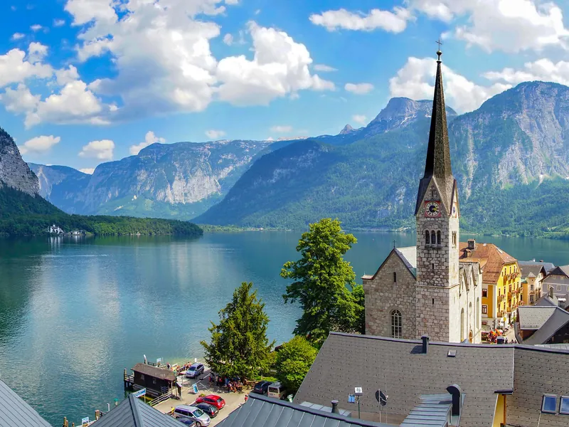
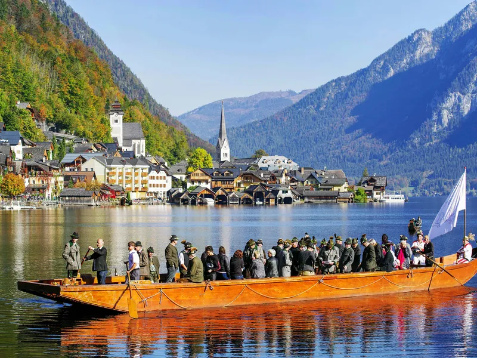
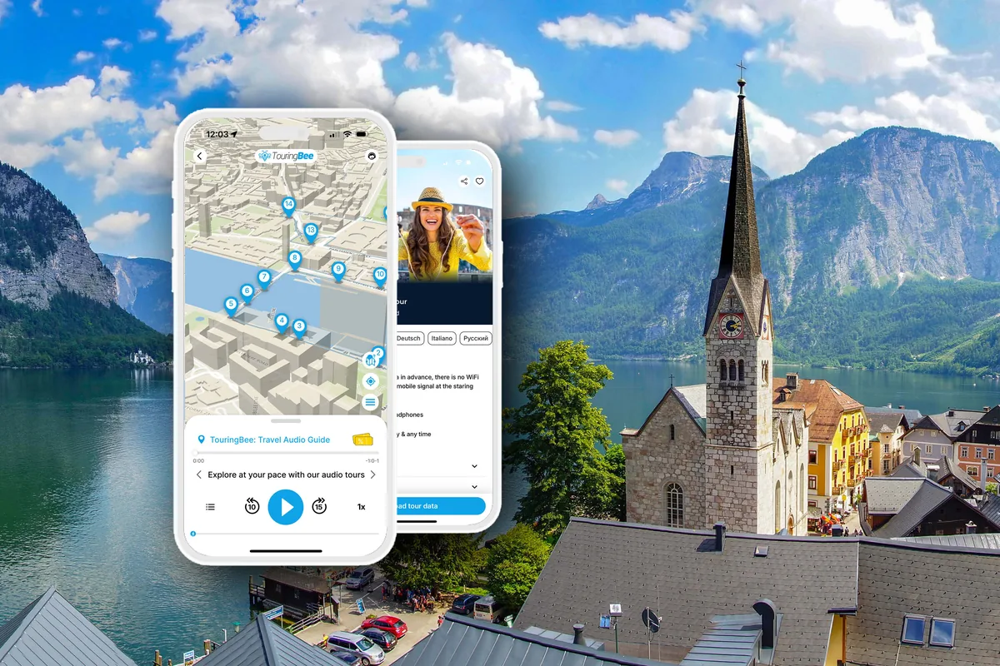

Guide de Hallstatt → Tous les guides
Que voir à Hallstatt : les sites, les prix et ce qu'on peut sauter
On traverse Hallstatt à pied en vingt minutes. La liste des choses à voir est courte — la vraie question n'est donc pas quoi voir, mais à quoi donner ses heures.
L'argent est le moindre problème. Presque tout coûte entre zéro et douze euros, et les deux gros billets — la mine de sel et les téléphériques du Dachstein — valent leur prix ; ils sont seulement trop longs pour les trois ou quatre heures dont dispose la plupart des visiteurs. Presque toutes les mauvaises journées à Hallstatt viennent de là : faire tenir trois heures de visite dans un passage de quatre.
Et si vous voulez plus qu'une promenade devant les façades, TouringBee propose un parcours audio en autonomie : dix-sept arrêts, environ quatre-vingt-dix minutes, une carte hors connexion et les histoires que les panneaux laissent de côté. Pourquoi les archéologues ont-ils donné le nom d'un village de quelques centaines d'habitants à tout un âge européen ? Comment le sel a-t-il fait de cette faille alpine l'un des sites préhistoriques majeurs du continent ? Ce parcours y répond sur les lieux mêmes.
Pour tout le séjour, commencez par le guide complet de Hallstatt.
Une mise au point avant la liste. Hallstatt compte 741 habitants, et ne compte pas ses visiteurs : le plan de gestion du patrimoine mondial convertit les entrées de parking en personnes, à raison de 2,8 par voiture et 30 par autocar, et sur cette base l'étude de circulation de 2018 chiffre la plus grosse journée calculée à environ 9 000. L'arithmétique du plan frappe plus fort que n'importe quel chiffre rond : entre l'embarcadère de Lahn et le point photo au nord vivent 237 personnes, et un jour de pointe elles reçoivent près de 40 visiteurs chacune.
Les autocars sont plafonnés à 54 arrivées par jour depuis 2020, sur créneaux réservés, et en 2024 le planificateur des transports de la commune indiquait que leur nombre quotidien avait été divisé par deux depuis 2018 ; les voitures et les trains, eux, n'ont aucun quota. Dès 2017, les églises employaient quelqu'un à l'entrée pour que les offices ne soient pas interrompus. Un village habité, donc, pas une attraction.

Tout ce qu'il y a à voir, en un tableau
Durées pour un passage sans hâte — ajoutez du temps si vous photographiez, montez lentement ou vous arrêtez pour écouter.
| Site | Durée | Prix | Notre avis |
|---|---|---|---|
| Le point de vue photo Gosaumühlstraße | ~10 min | Gratuit | Oui — un angle, pas le village |
| Le Marktplatz et les ruelles hautes | 30–45 min | Gratuit | Oui, et les ruelles sont la meilleure moitié |
| Église paroissiale catholique et cimetière de la montagne | ~20 min | Gratuit | Oui — notre choix si vous ne faites qu'une chose |
| La maison des ossements chapelle Saint-Michel | 15–20 min | 2 € | Oui — peu banal, pour deux euros |
| Montée à pied au Skywalk | 1,5–2 h à la montée | Gratuit | Pas pour l'instant — le sentier est fermé jusqu'au printemps 2027 |
| Funiculaire pour le Skywalk | ~20 min aller-retour | 29 € | Le panorama sans l'heure de montée — par temps clair |
| Musée du patrimoine mondial | 60–90 min | 12 € | Bon choix si l'archéologie vous intéresse |
| Mine de sel Salzwelten avec le funiculaire | ~3 heures | 49 € | Oui, si vous avez trois heures et aimez l'histoire du sel |
| Dachstein Krippenstein 5fingers, grottes de glace | Demi-journée à journée | 46,70–66,20 € | Une excursion à part entière, pas un complément |
| Le bateau qui traverse le lac | ~7 min | 4,00 € | Oui, et c'est aussi la façon d'arriver |
Le temps qu'il faut vraiment
Trois heures. Le bateau, les ruelles hautes, le cimetière, la maison des ossements, le point photo, un café — la visite d'une journée, et elle suffit. Le parcours audio de quatre-vingt-dix minutes y tient largement.
Cinq à six heures. Idem, plus le musée ou la montée au Skywalk — l'un des deux.
Une journée. Ajoutez la mine de sel, et partez tôt : trois heures d'engagement, dernière visite souterraine au milieu de l'après-midi.
Deux jours. La seule version qui laisse place au Dachstein Krippenstein, et la seule où l'on voit le village avant dix heures et après dix-huit heures.
Ce qui est gratuit, et souvent le meilleur
Le point de vue photo — y aller, puis passer à autre chose
La vue que vous connaissez déjà se prend depuis la Gosaumühlstraße, quelques minutes au nord de la place du marché ; le site officiel des visiteurs la signale comme le point photo.
Dix minutes suffisent, attente d'une accalmie comprise. Mais des gens habitent ces maisons : en mai 2023, la commune y a installé deux panneaux pour empêcher les selfies, retirés après la polémique en ligne. Les panneaux ont disparu ; la raison qui les avait fait poser, non.
L'église paroissiale, le cimetière et l'escalier que personne ne prend
L'église paroissiale catholique occupe une terrasse au-dessus du village, et le cimetière qui l'entoure est le lieu le plus étrange de la vallée : quelques dizaines de tombes sur une plate-forme rocheuse, des croix en fer forgé, un terrain planté comme un jardin, le lac en dessous.
Y aller suppose de monter, et c'est l'intérêt. Les vieux escaliers de bois couverts — la Müllerstiege — montent du bord de l'eau à l'église, et les voyageurs qui filment à Hallstatt reviennent sans cesse sur la même observation : quelques marches au-dessus de la rue principale, et la foule s'arrête net. L'un d'eux le formule ainsi : « dix marches en haut de l'escalier depuis la rue principale et vous êtes seul avec les vieux balcons de bois et le silence ».
Les deux églises, et le clocher qui est sur votre photo
Le clocher élancé de la vue depuis le lac — celui de la plupart des photos classiques du village — appartient à l'église protestante, en bas, près de la place du marché : la plus jeune des deux, un bâtiment néogothique achevé en octobre 1863, sur l'emplacement d'une maison de prière élevée en 1785 après l'édit de tolérance. Entrée libre.
L'église paroissiale catholique est la plus ancienne, en haut, sur la terrasse du cimetière — facile à manquer si l'on reste au bord de l'eau. Gratuite également ; comptez dix minutes pour chacune.
Le Marktplatz et les ruelles derrière
La place est une halte courte ; les ruelles au-dessus prennent le temps qu'on leur accorde — escaliers entre les maisons, linge qui sèche, chats, un tas de bois de loin en loin.
Monter au Skywalk
La plateforme Welterbeblick surplombe les toits du village de 350 mètres, juste sous l'ancienne tour de défense de la montagne de sel. Jusqu'au printemps 2027, il n'y a qu'une façon d'y monter : le funiculaire, 29 € aller-retour.
Le sentier en lacets de la montagne de sel est fermé pour travaux. L'office de tourisme de Hallstatt le fait figurer dans sa liste des fermetures en cours et annonce une réouverture au printemps 2027 ; la base régionale des sites date la fermeture du 29 août 2026. À pied, il reste le grand détour par l'Echerntal, que le même avis chiffre à environ une heure trente à deux heures par trajet.
La montée gratuite est donc hors jeu cette saison, et l'arbitrage a changé de nature : ce ne sont plus 29 € contre une heure d'effort, mais 29 € contre une demi-journée. À savoir tout de même : l'exploitant vend toujours un billet de mine sans funiculaire, à 33 €, « pour les randonneurs ».
La vraie variable, c'est la météo, et là les voyageurs sont unanimes : dans les nuages la plate-forme ne montre rien et l'argent est perdu, alors que la mine est la même par tous les temps. Si le Dachstein est bouché à votre arrivée, dépensez sous terre plutôt qu'en hauteur.

Ce qui mérite qu'on paie
La maison des ossements — 2 €, et vingt minutes peu banales
Dans la chapelle voisine de l'église paroissiale, l'ossuaire conserve environ 600 crânes peints, nommés et décorés de fleurs, de lierre ou de feuilles de chêne selon la personne. Les totaux varient selon les sources : le site du village cite une étude de 1948-50 qui a dénombré 2 104 crânes, d'autres parlent de plus de 1 200 ; seul le chiffre des crânes peints, environ 600, est constant partout. Le décor date pour l'essentiel du XIXe siècle.
Le dernier crâne est entré en 1995 : celui d'une femme morte en 1983 qui avait demandé à y être placée. Il repose à côté d'une croix, et il a une dent en or.
Entrée 2 € adulte, 50 centimes enfant. Les horaires sont le piège :
- 1er juin – 30 septembre : tous les jours, 10h–18h
- 1er – 31 octobre : tous les jours, 10h–17h
- 1er novembre – 31 mars : du mercredi au dimanche, 11h30–15h30
- 1er avril – 31 mai : tous les jours, 11h30–15h30
Relisez la ligne d'hiver. Prévoyez des pièces — les voyageurs le signalent systématiquement, l'ossuaire, le bateau et les toilettes publiques veulent du liquide.
Le musée du patrimoine mondial — 12 €, et la réponse à la question évidente
Pourquoi un village aussi petit a-t-il donné son nom à un âge préhistorique ? La réponse est là : la nécropole de la haute vallée a donné son nom à la culture de Hallstatt, à l'âge du fer, et le musée déroule sept mille ans de sel et de gens qui l'ont creusé, pièces originales à l'appui, avec vidéos et hologrammes.
Adultes 12 €, enfants 8 €, scolaires 5 €, étudiants et plus de 60 ans 9 €, billet famille 20 €. Ouvert tous les jours, horaires variables : 10h–18h de mai à septembre, 10h–16h en avril et en octobre, 11h–16h de novembre à mars. Comptez une heure, quatre-vingt-dix minutes si vous lisez tout.
À savoir : les plus belles pièces sorties des tombes sont au Musée d'histoire naturelle de Vienne, dont le département de préhistoire fouille ici depuis plus d'un siècle.
Les deux grandes excursions
La mine de sel
Salzwelten est la plus ancienne mine de sel du monde encore ouverte aux visiteurs : funiculaire à la montée, deux toboggans de bois de mineurs pour descendre — le plus long fait 64 mètres —, un lac souterrain et le site d'où viennent les trouvailles préhistoriques. Elle a rouvert le 29 août 2026 après un an de travaux, avec le Skywalk et une nouvelle cabine de funiculaire.
Billet combiné mine et funiculaire : 49 € adulte, 23 € enfant ; funiculaire seul 29 € et 14 €. À partir de vingt personnes, 47 € par personne. Comptez trois heures porte à porte.
S'il fallait retenir une seule grande visite payante, ce serait celle-là — à condition d'avoir trois heures libres.
Deux pièges d'horaires. Sur la page de l'exploitant, la dernière descente du funiculaire est à 18h jusqu'au 1er novembre 2026, puis à 16h30 du 2 novembre au 6 janvier 2027. La dernière visite guidée sous terre part à 16h30 puis à 15h sur ces deux mêmes périodes, la dernière montée une demi-heure avant ; la mine est fermée les 24 et 31 décembre. Le second piège, c'est le bord du tableau : rien n'est publié au-delà du 6 janvier 2027, donc une visite en janvier ou février ne peut pas s'appuyer dessus. La base régionale imprime d'autres horaires — 16h et 14h30, avec un changement de saison au 25 octobre et non au 2 novembre — et ce sont ses dernières montées, pas ses dernières descentes. Nous citons la page de l'exploitant : vérifiez-y votre date.
Le Dachstein Krippenstein, de l'autre côté du lac
La plus grosse journée de la région n'est pas à Hallstatt. Depuis Obertraun, des téléphériques montent vers la grotte de glace géante, la grotte du Mammouth et la plate-forme panoramique 5fingers. Les prix sont d'un autre ordre : billet Panorama 46,70 €, billet grottes 50,20 €, formule complète 66,20 €.
Pour 2026, l'exploitation d'été va du 1er mai au 1er novembre, avec la grotte du Mammouth à partir du 9 mai, le troisième tronçon du téléphérique à partir du 4 juin et la grotte Koppenbrüller seulement jusqu'au 27 septembre. L'hiver, du 19 décembre 2026 au 29 mars 2027 : presque tout novembre et la première quinzaine de décembre restent sans rien en service.
Réserver sa journée à Hallstatt
Ce qu'on peut sauter
Le Skywalk, la mine de sel et le Dachstein le même jour. La mine seule, c'est trois heures ; le Dachstein, une journée. Choisissez, et donnez le reste au village.
Chercher les décors de La Reine des neiges. On lit partout que Hallstatt aurait inspiré Arendelle ; les réalisateurs, eux, ont déclaré s'être appuyés sur des recherches menées en Norvège et au Canada. Un mythe touristique, plus qu'une piste à suivre sur place.
La rangée de restaurants du bord de l'eau à midi. Non qu'ils soient mauvais, mais entre onze et quinze heures environ, c'est là que mangent les groupes d'autocars. Le même déjeuner une heure plus tard, ou une rue plus haut, n'a rien à voir.
Pour finir, une histoire plutôt qu'un site : une copie grandeur réelle de Hallstatt a été construite en 2012 à Huizhou, dans le Guangdong — à mille kilomètres de tout ce qui précède.
L'heure à laquelle vous arrivez change la liste
Hallstatt est avant tout une destination d'excursion à la journée. Face à ce million et quelques calculé, 2024 a compté 138 835 nuitées — des nuits, pas des personnes. Le rapport touristique régional recense 91 825 arrivées sur l'année touristique 2024/25, pour une durée moyenne de séjour d'une nuit et demie. Pour un voyageur qui se réveille à Hallstatt, il y en a plus de dix qui arrivent et repartent le même jour.
Les voyageurs qui filment ici décrivent tous le même balancier : le village se remplit à partir de dix heures du matin et, vers six heures du soir, le calme est revenu. Le petit matin et la soirée sont donc les créneaux où la moitié gratuite de cette liste donne le meilleur d'elle-même.
Les histoires derrière les façades
Dix-sept arrêts, un itinéraire prêt à suivre, un audio qui se déclenche par GPS sur place. La carte fonctionne hors connexion : pas besoin de chercher le point suivant en données mobiles — et le parcours tient dans une visite de trois heures.
Se déplacer entre les sites
Le village se fait à pied : le bord de l'eau est assez plat, le cimetière, les ruelles hautes et le Skywalk supposent de monter.
Le bateau depuis la gare, sur l'autre rive, coûte 4,00 € l'aller et prend environ sept minutes — la meilleure première vue possible : le village sort de la falaise à mesure qu'on approche.
Pour les téléphériques du Dachstein, le bus 543 relie le terminal de Lahn à l'arrêt Obertraun Dachsteinseilbahn en dix à vingt minutes, mais toutes les deux heures seulement : regardez les horaires avant de bâtir une journée dessus. Les trains desservent la gare du village d'Obertraun, qui n'est pas le téléphérique.
Questions fréquentes
Que voir à Hallstatt ?
La place du marché et les ruelles derrière, l'église paroissiale catholique et son cimetière de montagne, la maison des ossements et ses crânes peints, le musée du patrimoine mondial, le point photo de la Gosaumühlstraße, la plate-forme du Skywalk. Et deux grosses excursions : la mine de sel et les grottes du Dachstein.
Combien de temps faut-il prévoir à Hallstatt ?
Trois heures couvrent le village. Cinq à six permettent d'ajouter le musée ou la montée au Skywalk. Une journée pour la mine de sel, deux jours avec le Dachstein Krippenstein.
La maison des ossements vaut-elle la visite ?
Pour 2 €, oui. Environ 600 crânes peints, chacun avec un nom, le dernier déposé en 1995. La contrainte, ce sont les horaires — de novembre à mars, du mercredi au dimanche, 11h30–15h30 — et il faut du liquide.
Le Skywalk de Hallstatt est-il payant ?
Pas pour la plateforme elle-même, mais y accéder a un coût en ce moment. Le sentier en lacets de la montagne de sel est fermé jusqu'au printemps 2027 : le funiculaire est donc la solution, 29 € aller-retour pour un adulte et 14 € pour un enfant. Dans les nuages, la vue disparaît de toute façon — regardez la montagne avant d'acheter.
Combien coûte la mine de sel ?
49 € pour un adulte et 23 € pour un enfant, funiculaire compris. Comptez trois heures. Sur la page de l'exploitant, les visites guidées vont jusqu'au 6 janvier 2027, la dernière partant à 15h à partir du 2 novembre ; rien n'est publié au-delà.
Le musée du patrimoine mondial en vaut-il la peine ?
Si vous voulez savoir pourquoi toute une période archéologique porte le nom de ce village, oui — 12 €, une heure. Les trouvailles les plus importantes des tombes sont toutefois à Vienne, au Musée d'histoire naturelle.
Qu'est-ce qui est gratuit à Hallstatt ?
La place du marché et les ruelles, les deux églises, le cimetière de la montagne, le point photo, et la plate-forme du Skywalk si vous y montez à pied. Deux bonnes heures sans rien dépenser.
Hallstatt est-il trop fréquenté pour en profiter ?
Au milieu d'une journée d'été, le bord de l'eau l'est. Mais quelques minutes de montée règlent l'essentiel, et avant dix heures comme après dix-huit heures c'est un autre endroit — l'argument pour y dormir plutôt que d'y venir en autocar.
Pour continuer
- Hallstatt : le guide complet
- Hallstatt depuis Salzbourg : tous les moyens d'y aller
- Hallstatt depuis Vienne : train, voiture ou excursion ?
- Marché de Noël de Hallstatt : vaut-il le voyage ?
Notre verdict
Les meilleures expériences ne sont pas les plus chères — cimetière, ruelles hautes et vue célèbre sont gratuits —, et les deux grosses méritent du temps à part, pas d'être glissées entre une photo et le bus du retour.
Trois heures : marcher. Une journée : ajouter la mine. Une nuit : tout ce qui précède devient plus calme.
Hallstatt à pied — l’audioguide
- 17 enregistrements dont les textes sont écrits par un historien, avec humour
- Carte hors ligne et position GPS : aucune donnée mobile consommée
- Vous partez le jour et à l’heure qui vous arrangent, pause déjeuner comprise
- Des illustrations pour savoir exactement ce que vous avez sous les yeux
- Sur iPhone comme sur Android, dans l’application TouringBee
Les billets pour l’ossuaire, la mine de sel et le musée restent à votre charge.

Parcourir Hallstatt avec l'audioguide — 9,99 €
Prix, horaires et saisons de cette page vérifiés en octobre 2026 sur les sites des exploitants eux-mêmes : le site touristique du village de Hallstatt, le musée du patrimoine mondial, Salzwelten, le Dachstein Krippenstein et l'office de tourisme régional. Les horaires changent plusieurs fois par an et la montagne de sel n'a rouvert qu'en août 2026 : vérifiez chez l'exploitant pour votre date. Certains liens sont affiliés : si vous réservez par leur intermédiaire, nous pouvons percevoir une petite commission, sans surcoût pour vous, et cela ne change rien à nos recommandations.